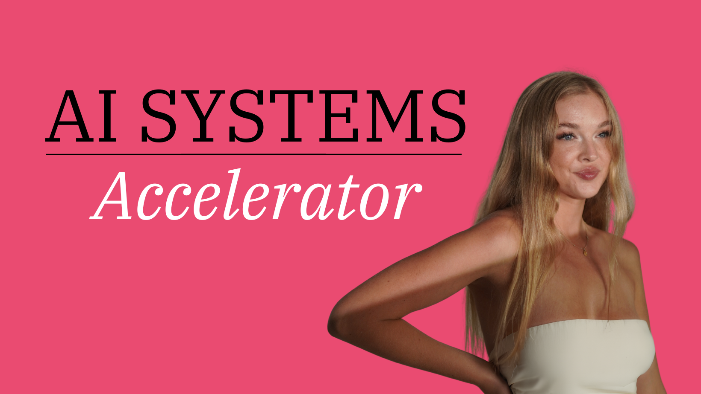

I built a tracker that showed me exactly where my money was going. What it revealed saved me $250/month. Here's what I found, what I changed, and the free tool to do it yourself.
I was running 37 cron jobs and 12 AI agents. Everything worked. But I had zero visibility into what any of it actually cost. When I finally built a way to see it, here's what I found.
I was paying for a scraping service to pull Instagram data for my frame analysis pipeline and competitor monitoring. When I broke down what it was actually doing task by task, I found that most of it had free alternatives:
The only thing I kept the paid service for was competitor profile-level data — the one task where there's no free alternative that works reliably. That took my biggest non-AI cost from over $100/month to under $2/month.
Most paid tools bundle a lot of things together. When you look at each task separately, you often find that free APIs or a bit of custom code can handle most of it. You only need to pay for the parts that are genuinely hard to replicate yourself.
My frame analysis and personal assistant agents were running through OpenRouter when I'd intended them to use the Anthropic API directly. My OpenRouter credits kept draining and I didn't know why. Once I tracked each call with a label and provider, I could see exactly which features were hitting the wrong provider. I switched them to Anthropic direct with OpenRouter as a fallback only.
My agent router was using Claude Sonnet to decide which specialist should handle each message. That's a classification task — Haiku handles it just as well for 73% less. My personal assistant's sub-agents were on GPT-4o-mini through OpenRouter when Haiku through Anthropic direct was cheaper and more reliable. The tracker showed me which tasks were using which models, and each fix took minutes.
My frame analysis pipeline had no spending limit. I added a $200/month cap that automatically stops the pipeline when it's reached. Some of my crons were running every 30 minutes when once or twice a day caught the same data. Small frequency adjustments, big cost difference over a month.
Every single one of these was invisible. The system worked fine. The bills just kept going up. I didn't know why until I could see every call, every model, every dollar, labeled and logged.
I built a tracker that logs every AI call with a label, calculates the cost, and flags anything unusual. It's a set of TypeScript files you drop into any project. No database, no third-party service.
| File | What it does |
|---|---|
tracker.ts |
Logs every LLM call to a local JSON file with model, tokens, cost, and a label you choose |
wrapper.ts |
Drop-in Anthropic client that tracks automatically. Replace one import and you're done |
pricing.ts |
Cost matrix for every major model (Anthropic, OpenAI, Google, Deepseek). Update when prices change |
summary.ts |
Daily summary with anomaly detection. Flags anything that's 2x+ its normal spend |
review.ts |
Period-over-period review (daily/weekly/monthly). Compares spend, detects spikes, generates suggestions |
ai-review.ts |
AI-powered review. Sends your data to Haiku for specific, contextual recommendations (~$0.01/review) |
cli-*.ts |
Terminal commands: npm run summary, npm run audit, npm run review, npm run ai-review |
The wrapper is Anthropic-native, but the tracker works with any LLM. OpenAI, Google, Deepseek, local models. Just call trackUsage() after any API call.
Open your project in Claude Code and paste each prompt below. Claude handles the rest. You don't need to know where files go or how imports work.
I want to add AI cost tracking to this project. Here are the source files: https://github.com/cassygarner/ai-cost-tracker Add these files to my project, install any dependencies they need, and initialize the tracker in my main entry point with a monthly budget cap of $[your budget]. Make sure the usage log file is in my .gitignore so it doesn't get committed.
Find every place in my codebase where I'm making AI API calls (Anthropic, OpenAI, Google, or any LLM provider) and add cost tracking to each one using the ai-cost-tracker. Give each call a descriptive label based on what it does, like "classify-email" or "draft-reply" or "generate-summary". I want to be able to see exactly which features cost what.
The more specific your labels, the more useful your reports. "classify-email" tells you something. "default" tells you nothing.
Once you've been running for a bit, use these prompts to get your reports.
Run the ai-cost-tracker daily summary and show me the results.
This shows you:
Run the ai-cost-tracker model audit and tell me which of my AI calls could use cheaper models without losing quality.
This scans your usage and finds:
Set up the ai-cost-tracker budget alert so I get a notification when I exceed $[your budget] per month. Send the alert to [Telegram/Slack/email]. Here's my webhook/token: [paste it]
The tracker comes with a built-in review system that compares your current spending to the previous period. You pick the frequency: daily, weekly, or monthly.
Run the ai-cost-tracker review for [daily/weekly/monthly] and show me the results.
This is where it gets powerful. Instead of remembering to check, you set it up once and it tells you automatically.
Set up a cron job that runs the ai-cost-tracker review automatically. I want a [daily/weekly/monthly] review sent to me on [Telegram/Slack/email]. Here's my webhook/token: [paste it] Only alert me if something spiked or my spend is trending up. If everything looks normal, just log it.
The regular review is just math. This one sends your data to an AI model that reads your actual usage patterns and gives you specific recommendations. Things like "your classify-email feature runs 200 times a day on Sonnet, switch it to Haiku and save $4/month."
Run the ai-cost-tracker AI review for [daily/weekly/monthly]. It should analyze my usage data and give me specific recommendations on what to change.
Cost: about $0.01-0.05 per review (one Haiku call). The AI review tracks its own cost too.
The tracker is only as useful as your labels. "default" tells you nothing. "classify-inbound-email" tells you exactly where to look when costs spike. Be specific.
Every new AI feature adds cost. Run a review before and after you ship something new so you can see exactly what it added to your bill.
When the review flags a feature on Sonnet or GPT-4o, ask: "Does this actually need the expensive model?" Test it on Haiku or 4o-mini. If the output is good enough, switch it and save 70-90%.
A cheap call that runs 200 times a day costs more than an expensive call that runs once. The review flags high-frequency features for exactly this reason.
Pick a monthly number you're comfortable with. Set it as your cap. When you get the alert, don't just bump the cap. Figure out what's eating the budget.
The cron workflow and notification integrations have more moving parts than the basic tracker. If you get stuck or want to see how others are setting theirs up, the AI Systems Accelerator community is where that happens.
The single biggest cost saver. Most people use expensive models for everything. Here's where I'd start, but always test with your actual tasks. A model that works for my classification might not work for yours.
| Task type | Start with | Potential savings |
|---|---|---|
| Classifying, routing, tagging | Haiku | up to 73% vs Sonnet |
| Scoring, ranking, filtering | Haiku | up to 73% vs Sonnet |
| Parsing, extracting structured data | Haiku | up to 73% vs Sonnet |
| Simple summarization | Haiku / 4o-mini | up to 73-94% |
| Drafting content, emails | Sonnet | up to 80% vs Opus |
| Creative writing, strategy | Sonnet | up to 80% vs Opus |
| Complex reasoning, code gen | Sonnet or Opus | test both |
Run the same 10 prompts through both models. Compare the outputs. Ask yourself:
The cheapest model isn't always the cheapest option. A model that needs 3 retries costs more than one that gets it right the first time. Let the data decide, not the price tag.
| Model | Input (per 1M tokens) | Output (per 1M tokens) |
|---|---|---|
| Claude Haiku 4.5 | $0.80 | $4.00 |
| GPT-4o-mini | $0.15 | $0.60 |
| Gemini 2.0 Flash | $0.10 | $0.40 |
| Claude Sonnet 4 | $3.00 | $15.00 |
| GPT-4o / GPT-5.4 | $2.50 | $10.00 |
| Claude Opus 4 | $15.00 | $75.00 |
This tool gives you the numbers in your terminal. What I actually run is a full visual dashboard with automated alerts, anomaly detection, agent monitoring, and AI-powered cost reviews that catch mistakes before they hit my bill.
I'm building a system that goes way beyond terminal output. Visual cost dashboards, automated Telegram/Slack alerts when something spikes, cron monitoring, budget enforcement that actually blocks overspend, and AI that reviews your usage and tells you exactly what to change. If you want early access, follow along.
I build AI systems for businesses. Consulting to figure out where AI fits, training to get your team using it, and full system builds where I scope it, build it, and hand it over.
If any of that sounds like what you need, DM me "BUILD" on Instagram.

Join the AI Systems Accelerator on Skool for setups, resources, and a community of builders.
Built by Cassy Garner - @cassy.garner